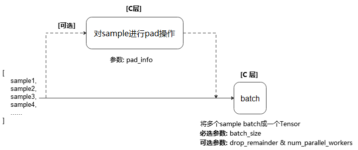

mindspore.dataset.Dataset.padded_batch
- mindspore.dataset.Dataset.padded_batch(batch_size, drop_remainder=False, num_parallel_workers=None, pad_info=None)[源代码]
将数据集中连续 batch_size 条数据组合为一个批数据，并可通过可选参数 pad_info 预先将样本补齐。
batch 操作要求每列中的数据具有相同的shape。
执行流程参考下图：
说明
执行 repeat 和 padded_batch 操作的先后顺序，会影响批处理数据的数量。建议在 padded_batch 操作完成后执行 repeat 操作。
- 参数：
batch_size (Union[int, Callable]) - 指定每个批处理数据包含的数据条目。 如果 batch_size 为整型，则直接表示每个批处理数据大小； 如果为可调用对象，则可以通过自定义行为动态指定每个批处理数据大小，要求该可调用对象接收一个参数BatchInfo，返回一个整形代表批处理大小，用法请参考样例（3）。
drop_remainder (bool, 可选) - 当最后一个批处理数据包含的数据条目小于 batch_size 时，是否将该批处理丢弃，不传递给下一个操作。默认值：
False，不丢弃。num_parallel_workers (int, 可选) - 指定 padded_batch 操作的并发线程数。 默认值：
None，使用全局默认线程数(8)，也可以通过mindspore.dataset.config.set_num_parallel_workers()配置全局线程数。pad_info (dict, 可选) - 对给定数据列进行填充。通过传入dict来指定列信息与填充信息，例如 pad_info={“col1”:([224,224],0)} ， 则将列名为”col1”的数据列扩充到shape为(224, 224)的Tensor，缺失的值使用0填充。如果 pad_info={} ，则每个 batch 中的所有样本会补齐至当前 batch 中样本最大的shape。如果 pad_info={“col1”: (None, 100)} ，则每个 batch 中的所有样本会补齐至当前 batch 中样本最大的shape，缺失的值使用100填充。默认值：
None，不填充。
- 返回：
Dataset，应用了上述操作的新数据集对象。
样例：
>>> # 1) Pad every sample to the largest sample's shape and batch the samples >>> import mindspore.dataset as ds >>> dataset = ds.NumpySlicesDataset([[1], [1, 2], [1, 2, 3], [1, 2, 3, 4]], "column1") >>> dataset = dataset.padded_batch(2, True, pad_info={}) >>> >>> # 2) Create a dataset where every 3 rows are combined into a batch >>> # and drops the last incomplete batch if there is one. >>> dataset = ds.NumpySlicesDataset([i for i in range(10)], "column1") >>> dataset = dataset.padded_batch(3, True) >>> >>> # 3) Create a dataset where its batch size is dynamic >>> # Define a callable batch size function and let batch size increase 1 each time. >>> def add_one(BatchInfo): ... return BatchInfo.get_batch_num() + 1 >>> dataset = dataset.padded_batch(batch_size=add_one, drop_remainder=True)